How to use Vantage
This guide teaches Vantage by using it. The tutorial takes the bundled sample, a Tata Tigor EV with six cameras, from its first analysis to the calibration files a dataset needs, quoting the figures the app really gives. After it, every feature is listed with where it lives, what it answers and an example. The documentation holds the full detail of each, and the technical reference its equations.
What Vantage is for
A data-collection vehicle records cameras, lidars, radars, GNSS and an IMU so that a perception team can train and test on what they recorded. What the dataset can contain is decided when the sensors are bolted on: a camera too high misses the kerb, a lidar behind a roof rack loses a third of its points, a seam in the bird's-eye view hides a child, a disk set fills in two hours. Vantage answers those questions on the computer, before anything is bought or drilled, and then checks the real rig against the plan.
| Stage | Questions Vantage answers |
|---|---|
| Design | Where do the cameras go? What does each see? Where is the ground blind, where is it too coarse? Which lens? |
| Studies | How far out are pedestrians resolved? What do rain, night, a loaded boot or a speed bump change? Are the triggers in step with the lidar? Will the disks, links and power keep up? |
| Build | What bracket holds each camera? How long is every cable? Which boards pin the calibration? |
| Calibrate and verify | Which intrinsics does this unit have? Is each camera where the plan put it? Does the first recording show what the plan promised? Has a camera been knocked since? |
| Hand over | Calibration files for nuScenes, KITTI, ROS 2, OpenCV and Kalibr; a sample dataset; a design-review pack; the same checks in CI. |
Every figure is computed on your computer. The AI assistant and Claude are optional. They read the design only through Vantage's tools, and nothing is sent anywhere until you set one up.
Install and check
Download the file for your system from the latest release. Each bundle carries its own Python, so nothing else needs installing.
# Linux (x86_64, or arm64 for a Jetson)
tar xf Vantage-*-linux-x86_64.tar.gz && cd Vantage-*-linux-*/
./install.sh # menu entry, the .vantage file type, ~/.local/bin/vantage
vantage --self-test # one line per check, ends with "self-test passed"
# Windows: run Vantage-…-windows-x64-setup.exe, then the "Vantage self-test" shortcut
# macOS: move Vantage.app to Applications, then
/Applications/Vantage.app/Contents/MacOS/vantage-cli --self-test
# from source, Python 3.10 or later
python3 -m pip install . # extras: [step] STEP import, [bags] compressed bags, [terminal] Claude Code panel
vantageThe downloads are not code-signed. On Windows choose More info ▸ Run anyway. On macOS choose Open Anyway in System Settings ▸ Privacy & Security. Details are in Install.
The workflow
Vehicle
Import the body (or start from the sample or a template), set the wheels, glass and the zones where sensors may go.
Rig
Place cameras from the library, add rig parts, lidars, radars, GNSS and an IMU. The analysis follows every edit.
Studies
Check robustness, range, weather, timing, budgets and the requirements. Keep alternatives as variants.
Build and verify
Brackets, harness and boards. Then calibrate, check the installed rig and its drives, and export the calibration.
Tutorial 1 · Open the sample
Start Vantage. The start window lists recent projects, the Tata Tigor EV sample and the vehicle library's 13 real vehicles, from the nuScenes ZOE and the KITTI Passat to a Sprinter van and a Cascadia tractor. Open the sample, or from a terminal:
vantage --sampleThe sample has a measured body and five variants, which are alternative layouts of the same vehicle (the Variant box in the toolbar, or Layout ▸ Switch to). The active one, 6-cam · v3, has six STURDeCAM31 cameras with the H05R2 wide lens:
| Tag | Where | Pose in the sample |
|---|---|---|
F | front grille | x 3.23 m, z 0.62 m, pitch 40° down |
R | rear, above the bumper | x −0.80 m, z 0.56 m, yaw 180°, pitch 40° |
ML, MR | under the mirrors | x 1.88 m, y ±0.94 m, z 0.95 m, yaw ±65°, pitch 45° |
QL, QR | the sides, over the rear axle | x 0, y ±0.88 m, z 0.95 m, yaw ±90°, pitch 50° |
The other variants are 4-cam, 4-cam, mirror cameras 5° off, 6-cam front-heavy and
Data rig · 6-cam + lidar + radars. The last adds an Ouster OS1-128 lidar on the roof (L1) and
five radars (RD1–RD5) at the bumpers' corners and centre.
A project is one .vantage file. Every change is one undo step
(Ctrl+Z), and the History tab lists them. Save the sample under a new name with
Ctrl+Shift+S before you change it.
Tutorial 2 · Find your way around
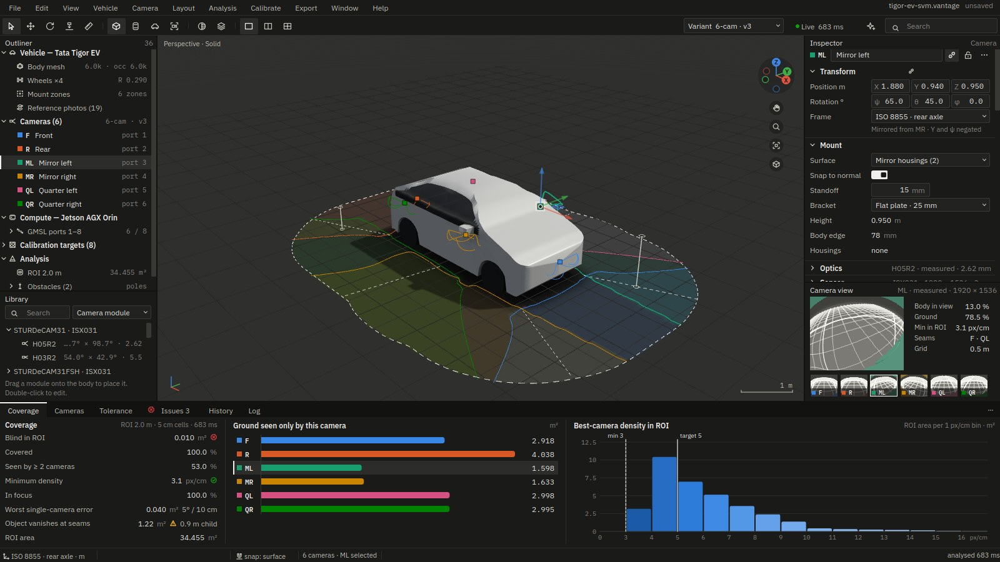
- Outliner (left): the vehicle, rig parts, cameras, sensors, calibration targets and obstacles. Click a camera to select it.
- Views (middle): one, two or four views, chosen from 3D, top, through a camera, and the stitched bird's-eye. Ctrl+Space maximises a view.
- Inspector (right): the selected object's fields. Every number accepts units and arithmetic
(
1880/2 mm,0.62 + 0.05,12°) and can be scrubbed with the mouse. - Analysis panels: Coverage, Cameras, Tolerance, Issues, History and Log.
- Assistant (Ctrl+J): recommendations, chat and Claude Code.
- Command palette (Ctrl+K): type any command's name instead of hunting the menus.
In 3D: left-drag orbits about the point under the cursor, right-drag pans, the wheel zooms towards the cursor. 7 is the top view, 1 the front and 3 the side. F frames the selection and Home frames everything. With a camera selected, Ctrl+0 looks through it. The navigation ball in the corner of each view does the same with any mouse or touchpad.
Try it. Select F in the outliner, press Ctrl+0 to see
its simulated fisheye image, then Ctrl+Shift+B for all six camera images, the
stitched bird's-eye view and the 3D bowl.
Tutorial 3 · Read the analysis
Vantage samples the ground around the car (the ROI, a band offset from the body) on a 5 cm grid. For every cell and camera it tests the lens, the sensor frame and occlusion by the body, rig and housings, and works out the pixel density. The Coverage panel shows the result. For the sample:
| Figure | Sample | What it means |
|---|---|---|
| ROI | 34.46 m² | the ground being judged |
| Blind in ROI | 0.010 m² | ground no camera sees: four 5 cm cells hugging the body |
| Covered | 99.97 % | seen by at least one camera |
| Seen by ≥ 2 cameras | 53.0 % | redundancy, and the overlap a stitch needs |
| Minimum density | 3.12 px/cm | the coarsest ground still seen; compare with your detector's needs |
The Cameras tab breaks it down per camera. For F: 7.20 m² seen, 2.92 m² that only it sees,
and 2.93 m² of the ROI would go blind without it. That last figure tells you which camera matters most.
The Issues tab lists what needs attention, worst first. The sample has three:
- Critical: 0.010 m² of ground in the ROI is blind, mostly at the right rear wheel arch.
- Warning: one 8 TB disk set holds 2.0 h of driving, less than the 8 h shift, so a shift needs 4 sets (31.5 TB).
- Warning: a 0.9 m child can vanish from the stitched bird's-eye view on 1.22 m², mostly at the
ML | QLseam, although a camera sees it.
Click an issue to select what it is about. View ▸ Overlays ▸ Heatmap colours the ground by best camera, density, redundancy or the objects in the stitched view, with a legend in the corner of the top view.
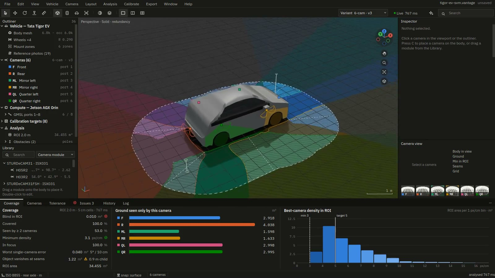
The same numbers come out of batch mode, for scripts:
vantage --sample --analyse report.json # metrics, per camera, seams, issues, link budgetTutorial 4 · Change a camera
With Live analysis on (the default), the figures update as you edit. Select F and change its
pitch in the inspector from 40 to 35. The analysis reruns at once:
| F pitch | Blind | Covered | Seen by ≥ 2 |
|---|---|---|---|
| 40° (as planned) | 0.010 m² | 99.97 % | 53.0 % |
| 35° (raised 5°) | 0.038 m² | 99.89 % | 53.0 % |
| 45° (lowered 5°) | 0.010 m² | 99.97 % | 53.1 % |
Raising the camera's aim loses ground at the bumper, so press Ctrl+Z. The assistant panel's live strip quotes your last edit with the figures before and after, and offers to undo a change that added blind ground.
Other ways to move a camera:
- G and R show move and rotate handles in the 3D view. Ctrl snaps to 1 cm and 5°, Shift moves finely and Esc puts the camera back. Dragging along the body keeps it on the surface.
- Camera ▸ Aim ▸ At ground point, then click where it should look.
- C places a new camera where you click on the body. Alt-click places a mirrored left and right pair.
- The Cameras tab is an editable table that accepts a paste from a spreadsheet.
- Ctrl+L locks a camera so that nothing moves it: not you, the optimiser or the assistant.
Example. Raising F 8 cm (z 0.62 → 0.70 m) lets it see 7.48 m² instead of
7.20 m² and lifts the redundancy to 53.8 %. The blind area grows to 0.015 m², because the higher camera sees
less of the ground right at the bumper. Every change is a trade, and the analysis shows both sides of it.
Tutorial 5 · The stitch seams
A surround-view display stitches the cameras into one bird's-eye image. Each seam hands the ground from one camera to the next. A standing object is drawn as a smear away from the camera that sees it. At a seam, the smear can fall to a camera that does not see the object, and it vanishes from the stitched image.
Open Camera views (Ctrl+Shift+B) ▸ Stitch seams and press
Suggest seams. Vantage tries each seam within ±15° and keeps only moves that do not leave more ground
below the minimum density. For the sample it moves three seams: QR | MR from −98.0° to −110.5°,
F | ML from 23.4° to 22.9° and R | QR from −156.2° to −157.7°. Apply makes
that one undo step. The area where the child vanishes falls from 1.22 m² to 1.18 m².
The gain is small because seams can only fix the case where an object vanishes at a seam. Most of the remaining trouble on the sample is cut off (3.49 m²): the smear leaves the view, which only a camera's height or pitch can change. Choose the Objects heatmap to see which is which, and hover over a point to see each camera's smear.
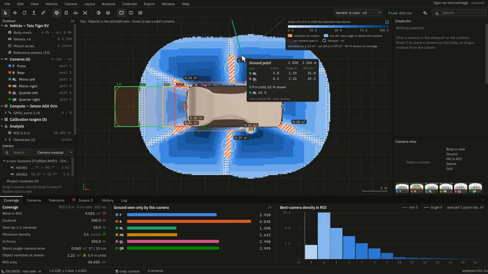
Tutorial 6 · Compare layouts
Keep each idea as a variant instead of overwriting the last one. The Layout menu adds, duplicates, renames and switches variants. Layout ▸ Compare variants… shows them side by side with a difference map of best-camera density and a table of every figure. The sample's five variants, compared against 6-cam · v3:
| Variant | Cameras | Blind | Seen by ≥ 2 | Min density | Blind ground is mostly… |
|---|---|---|---|---|---|
| 6-cam · v3 (reference) | 6 | 0.010 m² | 53.0 % | 3.1 px/cm | at the right rear wheel arch |
| 4-cam | 4 | 0.073 m² | 6.9 % | 2.1 px/cm | beside the doors, on the left sill |
| 4-cam, mirror cameras 5° off | 4 | 0.623 m² | 9.9 % | 2.3 px/cm | ahead of the front bumper |
| 6-cam front-heavy | 6 | 1.948 m² | 35.0 % | 1.9 px/cm | below the rear bumper |
| Data rig · 6-cam + lidar + radars | 6 | 0.183 m² | 52.8 % | 3.1 px/cm | below the front bumper |
The two quarter cameras take the redundancy from 6.9 % to 53 %, and a mirror camera mounted 5° wrong costs more than half a square metre. Make … active switches to the variant you prefer, and Export comparison… writes the table.
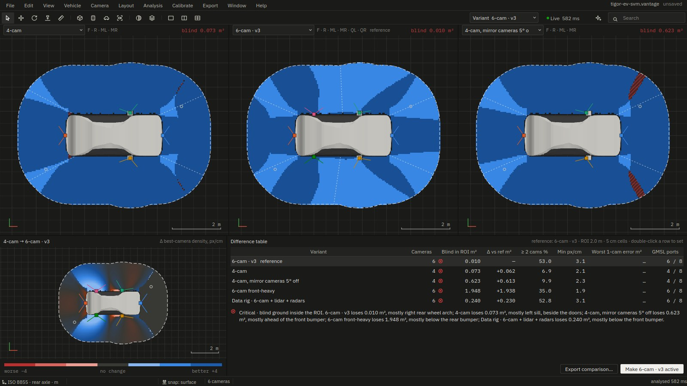
Tutorial 7 · Make it robust
Nobody mounts a camera to the exact degree. Analysis ▸ Tolerance study moves every camera at random within your tolerances (for example ±1° in yaw, pitch and roll and ±5 mm in position, over 2,000 samples by default) and reports the spread of the blind area, the minimum density and how far the seams move. Its tornado chart ranks which parameter of which camera matters most. That is the mount to make stiff, and the one to check first at installation.
Layout ▸ Optimise placement… searches camera poses with an evolutionary search, scored under the same tolerances, and shows the Pareto front of coverage against robustness. Apply a result as a new variant so the original is kept. Refine with gradients, on the second tab, then tunes every camera's six pose values continuously. Locked cameras stay put, mirrored pairs move together, and every layout is re-checked with the exact engine.
vantage rig.vantage --refine-rig refined.json --refine-from "6-cam · v3"Tutorial 8 · Lidar, radar, GNSS
Switch to the Data rig · 6-cam + lidar + radars variant. Vehicle ▸ Add lidar, Add radar, Add GNSS antenna and Add IMU put sensors where they usually go: a lidar on top of the highest mast, a radar mid-bumper, two GNSS antennas as far apart as the roof allows, and the IMU over the rear axle. Move them like cameras. Vehicle ▸ Add rig part adds a roof rack, mast, enclosure or bar, sized to the roof. Rig parts block the cameras' view like the body does.
Each sensor's housing and each camera module is a solid that the other cameras cannot see through, so a
lidar on a mast shows up as a dark shape in the cameras behind it. On the data rig, the front radar
RD1 sits 12 cm below F and hides 10.7 % of its image, so the blind ground grows from 0.010 m² to 0.183 m², mostly below the front bumper. Analysis ▸ Lidar and radar coverage
says what this costs the lidar itself. On the data rig, 34 % of L1's points land on the vehicle or the rig, and of the sector checks 27 are covered redundantly, 2 by a single sensor and 3 have a gap.
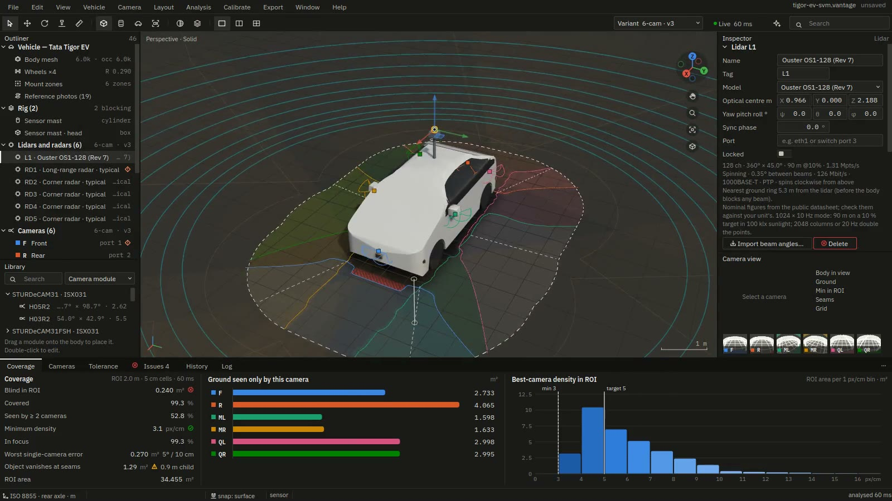
Tutorial 9 · Run the studies
The Analysis menu holds one page per question. Each page has an Export button, and each has a
batch option that writes the same JSON. These are the data rig's results (--variant 5 picks it by
its place in the list):
| Study | The data rig's answer | Batch |
|---|---|---|
| Perception range | Ahead, a car is resolved to 70.1 m, a pedestrian to 66.3 m and a sign to 47.1 m. The front sector asks for 80 m, so it fails by 9.9 m for cars. Front-left asks for 40 m and passes. | --perception-range |
| Sync and timing | The worst camera fires 12.41 ms away from the lidar sweep, which is 17.2 cm of travel at 50 km/h. Suggested trigger lines bring it to 0.94 ms. | --sync-plan |
| Recording budget | The disks need 1,443 of their 1,500 MB/s (96 %). One 8 TB set holds 2.0 h, so a shift needs 4 sets (32 TB). The busiest camera link, F, carries 1,557 of 6,000 Mbit/s. | --recording-budget |
| Power budget | 166.5 W steady and 212.7 W peak. The 600 W DC-DC converter runs at 28 %, and the enclosure must shed 135 W of heat. | --power-budget |
| Blind volume | A 0.9 m child goes undetected on 0.005 m², all within 5 cm of the body. | --blind-volume |
vantage --sample --variant 5 --perception-range range.json
vantage --sample --variant 5 --sync-plan sync.json
vantage --sample --variant 5 --recording-budget recording.jsonThe feature list below describes every study, with an example for each.
Tutorial 10 · Write the requirements
A rig is signed off against written requirements, not a feeling. Analysis ▸ Requirements scorecard holds each as a metric, an operator and a target, marked must or should. An example is "perception range, pedestrians, every sector ≥ 40 m". Start with Add from the plan, which proposes the requirements the project already implies (the perception range's required ranges, the minimum density, the recording shift, the blur limit, the power runtime, the GNSS sky threshold). You can also start from a template, or Suggest from the brief, which picks out phrases with a number and a unit from the project brief. Nothing is added until you tick it.
Run evaluates every requirement from the studies behind it. The verdict passes only when every must
requirement passes. Export writes requirements.json, requirements.csv and
review_pack.pdf, a design-review pack with one page per study used.
vantage rig.vantage --check review/ # exit 5 when a must requirement fails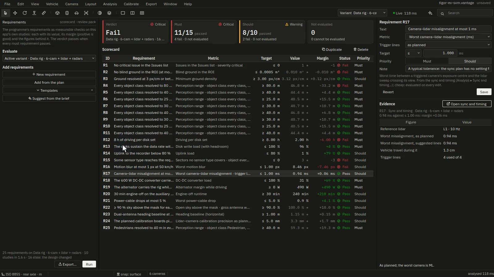
Tutorial 11 · Build it
- Analysis ▸ Mount brackets makes a 3D-printable bracket per camera that holds it at exactly its planned optical centre and angles, on the surface under it. Generate, check the preview (which also shows how much of the image the bracket blocks), then export an STL per camera and a sheet.
- Analysis ▸ Cable harness routes every cable along the body to the compute box and checks each length against what the link allows, the GNSS cable loss and the voltage drop on power pairs.
- Calibrate ▸ Target planner places the calibration boards on the floor. Calibrate ▸ Calibration observability then says how firmly those boards will pin each camera's pose, before anything is printed.
- The Mount sheet format of Export ▸ Export is a PDF for the workshop with every pose.
vantage rig.vantage --brackets out/ # out/brackets: STL per camera, brackets.json, a sheet
vantage rig.vantage --harness harness.json # exit 2 when a cable is longer than its link allows
vantage rig.vantage --observability obs/ # each camera's 1σ from the planned boardsTutorial 12 · Calibrate and verify
Once the rig is built, the Calibrate menu turns it back into numbers and checks them against the plan:
- Lens calibration (Ctrl+Shift+L): 10 to 20 views of a hand-held checkerboard give each unit its own fisheye intrinsics. The Calibration coach on the Live rig page shows where to hold the board next.
- Installation check (Ctrl+Shift+I): one image per camera of the boards on the floor gives each camera's pose, compared with the plan within ±10 mm and ±1° by default.
- Lidar–camera calibration: a board held at several poses that both sensors see gives the lidar's pose relative to a camera.
- Live rig: every stream's frame rate, drops, exposure, sharpness and sync, before and during a drive.
- As-built check: a short drive shows whether each real camera sees what the simulation says it sees, with pose corrections and the coverage as built.
- Drive-log check: a whole recorded drive (ROS 2 bag or nuScenes) against the plan: rates, gaps, timing and the lidar's agreement with each image.
- Online self-calibration follows each camera's rotation relative to the lidar through a drive and finds knocks and flex.
- Fleet tracks the rig on every vehicle built to the design and points out the one that differs.
vantage rig.vantage --calibrate-lens views_F/ --camera F --board 9x6 --square 60 --serial SN0042 \
--calib-out F.yaml --save rig.vantage
vantage rig.vantage --install-check captures/ --report install.json --as-built rig-asbuilt.vantage
vantage rig.vantage --drive-log drive.mcap drivecheck/ # exit 3 when a sensor has to be re-mountedTutorial 13 · Hand over the data
Export ▸ Export (Ctrl+E) previews every file before writing it. Choose the frame
(rear axle, front axle, front bumper, ground centre or a custom origin), the units and the angles. The calibration
formats are: extrinsics (JSON, YAML, CSV), OpenCV YAML per camera, ROS 2 (URDF and a static TF launch file),
ROS camera_info, nuScenes calibrated_sensor, KITTI and a Kalibr camchain.
Export ▸ Sample dataset writes a short synthetic drive recorded by exactly this rig, as a nuScenes folder and
a ROS 2 bag, so the ingestion pipeline can be tested before the car exists.
vantage --sample --export out/ --formats extrinsics_json,ros2,nuscenes_calib,opencv_yaml
# out/extrinsics.json out/vantage_cameras.urdf out/static_tf.launch.py
# out/nuscenes/calibrated_sensor.json, sensor.json out/opencv/F.yaml … QR.yaml
vantage --sample --dataset sample_drive/That completes the tutorial. The rest of this page goes through each feature.
Your own vehicle: from a 3D model to a rig
- File ▸ Import ▸ Vehicle model (Ctrl+I), or
vantage car.glb. It reads glTF/GLB, OBJ, STL, PLY, FBX and, with the optional gmsh package, STEP. - The wizard guesses the units from the size and asks for the up and forward axes. Inside-out meshes are flipped by themselves.
- Confirm the wheel centres, which are found from the wheel parts or picked on the mesh. They set the ground and the origin (the rear-axle centre on the ground, ISO 8855: x forward, y left, z up).
- Check the spec against the datasheet's length, width, height and wheelbase, and confirm which parts are glass.
- Paint mount zones with the brush: where cameras may go and where they may not (doors that open, the bonnet's shut line).
- Drag modules from the Library onto the body, or press C and click. Start with a mirrored pair (Alt-click), lock what is fixed, and let the analysis guide the rest.
A library vehicle (vantage --template lincoln_mkz_2017) gives a body at that vehicle's stated
dimensions with a starting layout when there is no model yet. Swap the body later and the rig stays.
Conventions to remember. Metres and degrees. Yaw is positive to the left, and pitch is positive pointing down. Pixel density is in px/cm. Exported intrinsics use OpenCV's convention, so the centre of a 1920-wide sensor is cx = 959.5.
Every feature: designing the rig
Each entry gives where to find the feature, what it answers and an example. Reference links to its full section in the docs.
Research tools in the 3D view
Where: the 3D view; View ▸ Overlays; Heat map; the toolbar; the Probe tool (P). The view has these tools:
- a bottom-left card of live metrics and a legend of what is on;
- a through-the-lens picture of the camera under the pointer, with the cursor as a crosshair;
- Alt-drag of seams and guideline markers, with a badge showing the effect;
- the BEV features heat map (feature cells per 0.5 m pillar to 50 m: where BEV grids starve);
- the Stereo σ heat map (triangulation depth σ of the best camera pair);
- lidar rings coloured by camera pixels per lidar point, and the lidar's timing wedges against each camera;
- footprints warped by a speed and yaw rate typed into the toolbar;
- probes that read every camera.
Example. On the data rig, set Heat map ▸ BEV features: at stride 16, 0.8 % of the grid within 10 m is starved, but 78 % within 25 m. Press P and click 5 m ahead. F's card gives the pedestrian's box in pixels and how far it would move if F drifted 0.2°. Type 15 m/s in the toolbar to see where each camera really samples the ground. Reference
Custom hardware
Where: Vehicle ▸ New custom hardware…, Camera ▸ New custom camera module…, the Library panel's Hardware list. Add a camera, lens, lidar, radar, GNSS/INS, IMU, compute unit, recorder, switch, time server or converter from its datasheet. The form asks only for what Vantage uses, says which study uses each figure, and checks the figures as you type.
Example. Open the Sprinter template: its eight cameras need more than the default recorder writes. In New custom hardware… choose Recorder, enter 3000 MB/s and 16 TB, add it, and select it for the rig. The recording study's critical issue clears, and the power budget gains its watts. Reference
Bridges to the AV research stack
Where: Export ▸ Research, Export ▸ AV research stack, Export ▸ Stream to Rerun / Foxglove, Analysis ▸ Compare rigs…, File ▸ New from template ▸ Reference rigs. Vantage exports:
- per-pixel Plücker rays, occupancy voxel ray density and virtual canonical cameras;
- calibration stress tests and 3DGS / Nerfstudio rigs;
- configs for Autoware, NAVSIM, HUGSIM, MMDetection3D, OpenPCDet and LeRobot;
- the scene to Foxglove or Rerun.
It also scores the domain gap between your rig and nuScenes, KITTI or Tesla's camera suite.
Example. On the data rig, Analysis ▸ Compare rigs… against Reference · Motional (nuTonomy) nuScenes gives 0.52, a large band, mostly from camera height and depression. A detector trained on nuScenes would see these images from a very different angle. Reference
Vehicle library
Where: the Library panel's Vehicles list; File ▸ New from template; the start window. There are 13 real vehicles with the dimensions their makers state and their sources: the nuScenes Renault ZOE, the KITTI Passat B6 Variant, the Lincoln MKZ, Toyota Prius and Sienna, Chrysler Pacifica Hybrid, Hyundai IONIQ 5, Kia e-Niro, Lexus RX 450h, Tesla Model 3, a Sprinter van, the Tata Nexon.ev and a Cascadia tractor with a 53 ft trailer. A new project gets its family's body at the stated length, width, height, wheelbase, overhangs, track and wheel size. The body is shaped, with glass, alloy rims, lamps, black trim and mirror pods. A figure not stated is drawn and named in the design log. View ▸ Overlays ▸ Range rings (Alt+R) marks 1, 2, 5 and 10 m from the body on the ground. Three vehicles (MKZ, Prius, RX 450h) have freely licensed 3D models that Vantage downloads from their publishers and opens in the import wizard, with the stated figures for the spec check.
Example. Right-click Toyota Prius in the Library's Vehicles list and choose Download its 3D model and import…. Vantage asks first, downloads the Open Robotics model (CC0, 1.3 MB), and opens the wizard set to centimetres and +Z up, with Toyota's 4.539 × 1.760 × 1.476 m in the spec check. Reference
Camera library
Where: the Library panel; Camera ▸ Change lens; Camera ▸ Edit module…. There are 36 real modules with 52 lenses: 22 from e-con Systems (STURDeCAM, NileCAM, NeduCAM), and Leopard Imaging, D3 Embedded and Sekonix GMSL cameras, the nuScenes and KITTI cameras with their lenses, Blackfly S and LUCID Triton. Each has the figures from its maker's public pages and the date they were read; a figure the maker does not state is listed as not given. You can add your own modules: rectilinear, equidistant, equisolid, stereographic or measured Kannala–Brandt, imported from JSON, CSV or OpenCV YAML.
Example. To try a narrow lens ahead, select F and use Camera ▸ Change lens to
switch from the STURDeCAM31 H05R2 (128.7° horizontal) to the H03R2 (54.0°). The perception range ahead grows and the
ground near the bumper is lost. Undo, or keep it as a variant. Reference
Rig parts
Where: Vehicle ▸ Add rig part: a roof rack, sensor mast, sensor enclosure or bar, edited in the inspector. Parts block the cameras' view and can carry sensors.
Example. Add a roof rack, then look through R (Ctrl+0) to see whether its
rear bar enters the image. The coverage and blind volume count it at once. Reference
Lidars, radars, GNSS and IMU
Where: Vehicle ▸ Add lidar / Add radar / Add GNSS antenna / Add IMU; View ▸ Overlays draws their fields. Each sensor belongs to the variant, like a camera. The library holds real products only, with their datasheets' figures: Ouster, Hesai, Velodyne (including KITTI's HDL-64E and nuScenes' HDL-32E), RoboSense and Livox lidars; Continental (nuScenes' ARS 408-21) and smartmicro radars; NovAtel and u-blox antennas; OxTS, NovAtel and SBG GNSS/INS units; Xsens and Bosch IMUs.
Example. Add a second radar and move it to a rear corner. Analysis ▸ Lidar and radar coverage shows the gap it closes, sector by sector, against the cameras. Reference
Housings in view
Where: the Inspector's Mount ▸ Housings row; Analysis ▸ Housings block cameras switches the effect off for comparison. Every sensor housing and camera module is a solid in every other camera's view.
Example. On the data rig, RD1 hides 10.7 % of F's image and
RD4 and RD5 0.1 % of QL's and QR's. With housings the rig is
blind on 0.183 m², and without them on 0.010 m². Lowering RD1 from 0.50 m to 0.40 m brings the blind ground down to 0.035 m², and to 0.028 m² at 0.35 m. Moving it 30 cm to the left of F instead gets back
to 0.010 m².
vantage rig.vantage --housings housings.json # exit 2 when a camera sits inside a housingHeatmaps and overlays
Where: View ▸ Overlays. The heatmap colours the ground by best camera, density, redundancy or objects. Other overlays draw frustums, sensor fields, the harness, critical targets, wipers, parking guidelines and the clock tree. View ▸ Render image (Ctrl+Shift+R) saves a picture of the view.
Example. Pick the Density heatmap: ground below the project's minimum is grey and hatched, with lines at the minimum and the target, so a low-density patch shows at a glance. Reference
Issues and rules
Where: the Issues tab. Blind ground, cable lengths, GMSL port conflicts and link budget, forbidden zones, density below the minimum, objects vanishing at seams, housings in view, misplaced sensors, the recording and power budgets, the GNSS sky, and more. Click one to select what it is about. Reference
Variants and compare
Where: the Layout menu; Layout ▸ Compare variants…. Duplicate before a big change, and compare when you want the case for one layout
over another. --variant picks one in batch mode, by name or 1-based number. Reference
Every feature: studies
Each study is a page in the Analysis menu with an Export button and a batch option. The batch option writes the same JSON with a provenance block (see Reproducing a result).
Tolerance study, optimiser and gradient refinement
Where: Analysis ▸ Tolerance study…; Layout ▸ Optimise placement…. Answers: how much a mounting error costs, which mount matters most, and the best poses under tolerance.
Example. Set ±1° and ±5 mm, run it and pin the worst case to preview it. If one quarter camera's pitch dominates the tornado, give that mount a pin or a stiffer bracket. Reference
Load cases and suspension
Where: Analysis ▸ Load cases… and its Suspension tab. Answers: how far each corner drops with the crew, the rig and the luggage, and so how far every camera moves relative to the road between the calibration load and each case.
vantage rig.vantage --suspension-data corners.csv --suspension cases.json # exit 2 when a wheel lifts or the GVM is exceededRoad and body motion
Where: Analysis ▸ Road and body motion…. Add a ramp, crest, garage ramp, speed bump, kerb or crowned road. Answers: the coverage on that road, when a bump or kerb is first resolved, the clearance driving over it, and each camera's horizon shift under braking, squat and cornering roll.
Example. Add a 10 cm speed bump 8 m ahead and read the distance at which F first resolves it and
whether the bumper clears it. --terrain road.json exits 2 when the body would touch the road. Reference
Thermal and vibration drift
Where: Analysis ▸ Thermal and vibration drift…. Answers: how far the midday sun bends the rig hour by hour (in pixels for camera–lidar and stereo pairs), each mount's first mode, and the blur on a rough road, a speed bump and an expansion joint.
vantage rig.vantage --thermo-vib drift/ # exit 2 when a mount resonates in the body or wheel-hop band3D blind volume
Where: Analysis ▸ Blind volume. Answers: the space up to 2 m that no camera sees, where a 0.5 m pole, a 0.9 m child or a 1.8 m adult can stand unseen, and how far from the body, per direction.
Example. On the data rig a 0.9 m child is undetected on 0.005 m², all within 5 cm of the body. Drag the height slider to see where the blind space starts. Reference
Perception range
Where: Analysis ▸ Perception range. Answers: how far out each object class (car, pedestrian, cyclist, sign, or your own) is resolved with enough pixels for your detector, per direction, against the range each sector requires, and the stereo pairs.
Example. On the data rig the front sector asks for 80 m, but cars are resolved to 70.1 m. Try
the narrow lens on F or a second, narrow forward camera, and watch the front sector's shortfall. Reference
Weather and night
Where: Analysis ▸ Weather and night…. The conditions are clear, overcast, night (unlit or lit), light or heavy rain, fog and snow, each with figures you can edit. Answers: the range per object, camera, lidar and radar against clear weather.
vantage rig.vantage --weather weather.json # every condition compared
vantage rig.vantage --perception-range fog.json --condition fog # one conditionCritical targets and mounting envelopes
Where: Analysis ▸ Critical targets. Place what the rig must resolve where it matters, such as a 0.9 m child 2 m ahead of the bumper, a traffic light, a kerb by the front wheel or a lane marking on a curve. Answers: which cameras resolve each target, and each camera's mounting envelope: where it can sit and still resolve them all.
vantage rig.vantage --critical-targets critical/ # exit 2 when no camera resolves a targetLidar and radar coverage
Where: Analysis ▸ Lidar and radar coverage. Answers: the share of lidar points lost to the vehicle, the ground blind zone, the points on a car 25, 50 and 100 m ahead, the detection range per object and sector against the cameras', and the camera–lidar overlap.
Example. On the data rig 34 % of L1's points hit the vehicle. Raise L1 20 cm
on a mast (Vehicle ▸ Add rig part ▸ Sensor mast) and see what that does to the figure and to the ground blind zone. Reference
Sync and timing
Where: Analysis ▸ Sync and timing. Answers: when each camera should fire so that it sees the scene as the spinning lidar sweeps past, the trigger lines, motion blur and the rolling-shutter skew.
Example. The data rig's worst camera is 12.41 ms off the sweep (17.2 cm at 50 km/h). The suggested
trigger lines bring that to 0.94 ms. --sync-plan sync.json. Reference
Clock tree and time sync
Where: Analysis ▸ Clock tree and time sync. It draws the GNSS PPS, the grandmaster, gPTP and the deserializers' FSYNC, and lets you put faults on a timeline, such as a PPS dropout or a lost grandmaster. Answers: every sensor's timestamp error, and how far it moves lidar points in each image.
vantage rig.vantage --clock-tree clock/ # exit 3 when lidar points land beyond the limitRecording budget
Where: Analysis ▸ Recording budget. Answers: each sensor's data rate (raw, JPEG or H.265), the links, the write speed and the hours per disk set.
Example. The data rig needs 96 % of its disks' sustained write and 4 disk sets per 8 h shift. Switching the cameras to H.265 in the page shows how many sets that saves. Reference
Power budget
Where: Analysis ▸ Power budget. Answers: the steady and peak draw, the DC-DC converter's load, the fuses and power cables, the alternator margin and how long the rig runs with the engine off.
Example. The data rig draws 166.5 W steady and 212.7 W peak, and the 600 W converter runs at 28 %. Reference
Cable harness
Where: Analysis ▸ Cable harness; View ▸ Overlays draws the routes. Answers: each cable's
routed length against its link's limit, the GNSS cable loss and the power-pair drop. --harness harness.json.
Reference
GNSS and IMU
Where: Analysis ▸ GNSS and IMU. Answers: the sky each antenna sees (and what blocks the rest),
the heading baseline, the INS lever arms and the pose error budget. --gnss gnss.json.
Reference
Sun glare and dirt
Where: Analysis ▸ Sun glare and dirt. Set the location, the dates and the daily driving window. Answers: which cameras have the sun in the image, when and on which headings, and how exposed each lens is to dirt, spray and rain.
Example. Keep the default location (Munich), choose a winter campaign from 08:00 to 17:00 and the Europe/Berlin time zone. The low sun shows which
heading blinds R in the afternoon. --exposure sun.json. Reference
Exposure metering and HDR seams
Where: Analysis ▸ Exposure metering and HDR seams. Answers: what each camera's auto-exposure should meter (ground only: no body, sky or dark image circle), as PNG masks and weighted AE rectangles for the ISP, and the exposure step across each seam at low sun, a tunnel exit and night.
vantage rig.vantage --isp isp/ # exit 2 when a seam keeps a critical step after balancingMaterials, glass and wipers
Where: Analysis ▸ Materials, glass and wipers. Answers: what each radar looks through (two-way loss,
derated range, multipath risk), which cameras are behind glass and whether the wipers clear their view.
--materials materials.json exits 2 when a radar looks into metal over half its field.
Reference
Mount brackets
Where: Analysis ▸ Mount brackets. Answers: a printable bracket per camera that sets its exact pose
on the surface under it, and how much of the image the bracket blocks. --brackets out/.
Reference
Requirements scorecard
Where: Analysis ▸ Requirements scorecard. Answers: does this rig meet what the programme
wrote down, and by what margin? It exports a design-review PDF. --check review/ exits 5 when a must
requirement fails. Reference
Experiments
Where: Analysis ▸ Experiments. Pick factors (a camera's pose or lens, a sensor's model, the ROI, a load case, the weather) and responses (any scorecard metric). Answers: what drives each figure (sensitivity), and the spread of a figure when the factors are uncertain.
Example. Vary F's pitch from 25° to 45° in 5° steps against both STURDeCAM31 lenses, with the blind area and
the pedestrian range ahead as responses. Export the spec and run it headless; an interrupted run resumes:
vantage rig.vantage --experiment spec.json exp/Every feature: surround view
Bird's-eye view, seams and remap tables
Where: Camera views (Ctrl+Shift+B). Drag a seam's handle to move it, or use Stitch seams ▸ Suggest seams. Exposure balancing and multi-band blending are available. The Bird's-eye remap tables export gives each camera float32 sensor coordinates per output pixel, blend weights and a body mask. The Reference stitcher export adds a C++ and Python stitcher under the Apache 2.0 licence, for production use. Reference
3D surround-view bowl
Where: Camera views ▸ bowl. It shows what an in-car display shows: the images on a bowl around the car, whose floor, wall height and reach are saved with the project. It exports as a textured OBJ with per-vertex remap tables. Reference
Parking guidelines
Where: Camera ▸ Parking guidelines…, or View ▸ Overlays ▸ Parking guidelines (Alt+G). It draws static width lines, distance markers and the trajectory at the steering angle, from the vehicle's own wheelbase and track. They export as tables in each camera's pixels. Reference
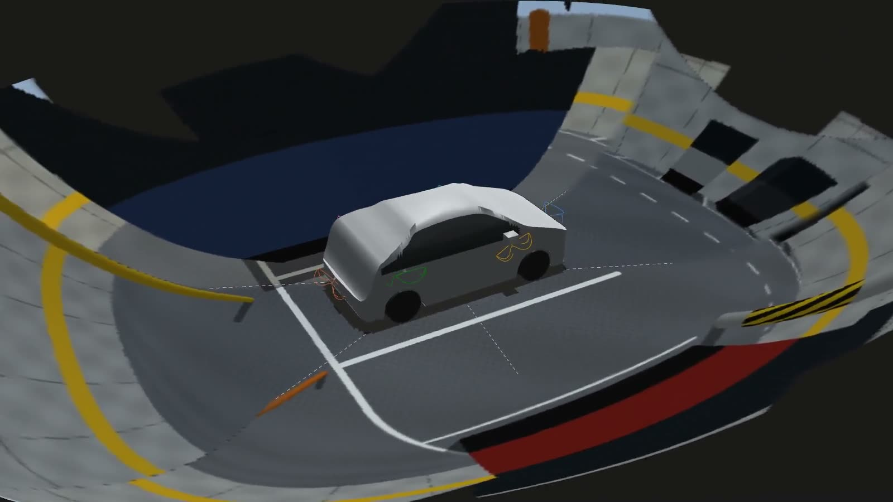
Every feature: calibration and checks
Each camera source can be a file, a live stream (a V4L2 device such as /dev/video0, a GStreamer pipeline, an RTSP or
HTTP URL) or a synthetic capture to try a page without hardware. Sources are saved with the project.
Unit lens calibration
Where: Calibrate ▸ Lens calibration (Ctrl+Shift+L). Fit 10 to 20 checkerboard
views as cv::fisheye, with the RMS per view and advice on corner coverage, or import a calibration from
OpenCV, ROS, Kalibr or JSON. --calibrate-lens DIR --camera F; --import-calib files….
Reference
Installation check
Where: Calibrate ▸ Installation check (Ctrl+Shift+I). One image per camera of the floor boards gives each camera's pose by PnP and a joint solve, against the plan's tolerances. It can save an as-built variant and remap tables for the measured poses.
Example. Name the images by camera tag (F.png, ML.png, …) and run
--install-check captures/ --report install.json --lut-out luts/. If glare hides a board, click its
corners by hand and pass them with --install-picks. Reference
Lidar–camera calibration
Where: Calibrate ▸ Lidar–camera calibration. Hold up a checkerboard with a white margin at several poses that both sensors see. Answers: the lidar's pose relative to the camera, with its uncertainty, and an overlay per pose to check it.
vantage rig.vantage --lidar-calib out/ --lidar-calib-pair F L1 --lidar-calib-folder pairs/ # pose01.png + pose01.pcd …Calibration observability
Where: Calibrate ▸ Calibration observability. Answers: before anything is printed, how firmly the
planned boards will pin each camera, each pair and each lidar. --observability obs/ --verify 20 checks the
prediction with 20 Monte Carlo trials. Reference
Live rig health and the calibration coach
Where: Calibrate ▸ Live rig. Press Start to see every stream's frame rate against the module's, its drops, exposure, sharpness and sync, each with a verdict. The Calibration coach tab shows a ghost board where the board should be held next, and bars that turn green as the calibration meets its requirement.
vantage rig.vantage --rig-health 60 health.json # watch every stream for 60 s
vantage rig.vantage --calib-coach coach/ # how many views the coach needs against random onesDrive-log check
Where: Calibrate ▸ Drive-log check. Open a ROS 2 bag (folder, .mcap or .db3) or a
nuScenes folder. Topics are matched to sensors by tag (/F/image_raw/compressed is camera F).
Answers: rates, gaps and timing against the plan, and whether the lidar's edges still line up with each image.
Long drives are fine, because the log is streamed rather than loaded whole. Reference
As-built check
Where: Calibrate ▸ As-built check…. A few seconds of driving by the real rig shows whether each camera's outline of the car is where the plan expects it, the pose corrections, and the coverage as built.
vantage rig.vantage --as-built-check first_drive/ asbuilt/ --save rig.vantage # exit 3 when the coverage does not holdOnline self-calibration
Where: Calibrate ▸ Online self-calibration. It follows each camera's rotation relative to the lidar through a whole
drive in 10 s windows, and finds the moment a camera was knocked. It writes a nuScenes folder with one calibration row per
segment and a /tf sidecar bag. --online-calib drive/ online/.
Reference
Fleet
Where: Calibrate ▸ Fleet. Add each vehicle and import its records (installation check reports, extrinsics, nuScenes, Kalibr). Answers: the latest offsets, the drift over time and the vehicles that differ from the rest.
vantage rig.vantage --fleet-import car-07 install.json --save rig.vantage
vantage rig.vantage --fleet fleet/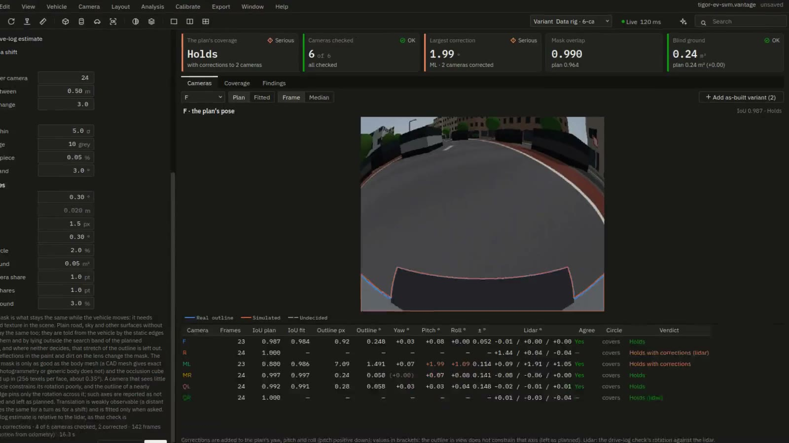
Every feature: simulation and data
Sample dataset
Where: Export ▸ Sample dataset. It writes a seeded synthetic drive (a street with a bend, or a highway, with traffic,
cyclists and a pedestrian crossing) recorded by exactly the planned rig, as nuScenes and a ROS 2 bag. It takes about
1.5 min at the defaults. --dataset out/, with --condition night for another weather.
Reference
ROS 2 bags
Vantage writes and reads ROS 2 bags (MCAP, and SQLite .db3 for reading) without a ROS installation.
ros2 bag play, Foxglove and rosbags open them. Reference
CARLA: drives, ground truth, faults and scenarios
Where: Simulate ▸ CARLA…. Point it at a CARLA 0.9.16 folder and its client Python. The planned rig is put on the CARLA car nearest your vehicle's size and recorded at the sync plan's times, with semantic, instance and range ground truth. Scenarios include a lead vehicle braking, a cut-in, and a pedestrian or cyclist crossing. Faults with known answers (a camera turned, a clock offset, dropped or frozen frames) let you test your own checks.
vantage rig.vantage --carla-run run/ --carla-scenario pedestrian_crossing --carla-ground-truth all
vantage rig.vantage --carla-run run/ --carla-faults '[{"tag": "F", "kind": "rotation", "deg": [0, 0.5, 0]}]'
vantage --ground-truth-summary run/Reference · Ground truth and faults
CARLA as a live rig
Where: Simulate ▸ CARLA live rig…. It streams the planned cameras from CARLA into Calibrate ▸ Live rig as if they were the real rig, with faults injected while it runs.
vantage rig.vantage --carla-live 30 live/ --live-fault '5:{"tag": "F", "kind": "freeze"}'Detection quality
Where: Simulate ▸ Detection quality…. It runs the YOLOX detector (downloaded on request and checked by SHA-256)
on a CARLA drive with ground truth. Answers: recall, precision, AP and the detection range per camera, class and range,
and recordings compared. --detection-quality det/ --detection-download.
Reference
Log replay
Where: Simulate ▸ Log replay. It rebuilds a recorded drive as 3D Gaussians, checks the rebuild against held-out frames, and renders it through a different rig. Answers: what rig B would have seen on the drive rig A recorded.
vantage rig.vantage --log-replay run/ replay/ --replay-variant "6-cam front-heavy" # exit 3 when it does not validateSimulation campaigns
Where: Simulate ▸ Simulation campaigns…. It drives the rig in CARLA many times, each drive varied in one known way, and
checks every drive as a real recording would be checked. Answers: the smallest knock, offset or drop each check finds.
Templates: fault_detectability, weather_sweep, rig_ab.
vantage rig.vantage --campaign camp/ --campaign-template fault_detectability # run again to resumeCritical targets in CARLA
Where: Simulate ▸ Critical targets in CARLA…. It stands the critical targets in CARLA and compares what each camera
sees with the study, in another renderer. --critical-carla crit/ exits 3 when a view disagrees.
Reference
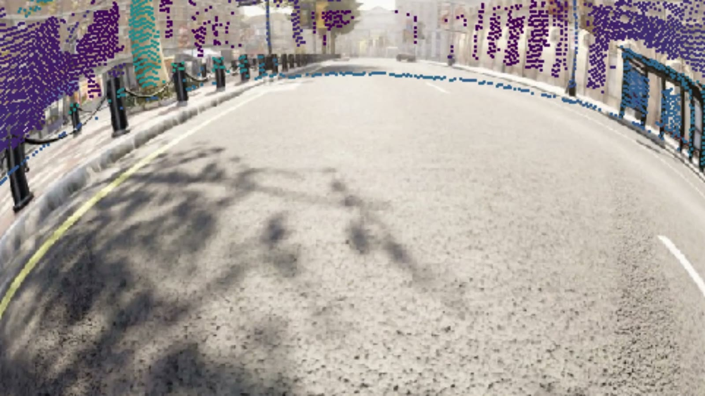
Every feature: the assistant and Claude
Two optional ways to work with an AI on the design, both in the assistant panel (Ctrl+J). Its switch at the top chooses between them:
| Assistant (Groq or Claude API) | Claude Code · MCP | |
|---|---|---|
| Needs | Your own API key, set in Preferences ▸ Assistant | Claude Code on a Claude subscription (or any MCP client) |
| Changes the design | Through proposals that you apply | Directly, as undo steps named Claude · … |
| Runs batch jobs | Through Copilot plans that you approve | Yes, with run_batch, on a copy, in a run folder. CARLA still goes through a plan you approve. |
Setting up the assistant
Create a key with Groq or in the Claude Console. Open Preferences ▸ Assistant (Ctrl+,), tick Use the assistant, choose the provider, paste the key and press Test. More ▸ What was sent shows the last request exactly. The vehicle model, images, recordings, point clouds, keys and stream passwords are never sent. Reference
Asking questions
The model reads the design only through Vantage's tools, so its numbers come from the analysis. Every lookup is listed under the answer, and you can click one to see what was asked and returned. Questions that work well:
- "Why is the ground behind the right rear wheel blind?"
- "Which camera would cost the most if it failed?"
- "What sees the point 2 m in front of the left headlamp, and how sharply?"
- "Would lowering the mirror cameras 20 mm help the seam at ML | QL?" (it simulates on a copy, then proposes)
- "Compare the variants and tell me which to take to the design review."
Agent mode and goals
Switch on Agent in the composer, or type /goal, and describe an outcome. For example, "no blind ground and at least
4 px/cm everywhere, without moving F". It writes a checklist, runs studies, searches poses, checks each option and
proposes the best one. It has up to 30 rounds of tool calls and 4 minutes, and Esc stops it.
Reference
The Copilot: plans you approve
Say what should run, and the Copilot writes a plan that you read and approve. It never runs anything itself.
- "A 10 s drive in Town10 at dusk in rain, 30 cars, 10 walkers, a pedestrian crossing, ground truth on, half-size images."
- "A fault campaign: turn F and ML by 0.1 to 1°, three seeds, plus clean drives."
- "An experiment: F pitch 25–45° by 5° × the two lenses, blind area."
- "Start the live rig and freeze QR after 10 s."
An approved plan can be run again headless, exactly as approved: vantage rig.vantage --run-plan ID out/.
Reference
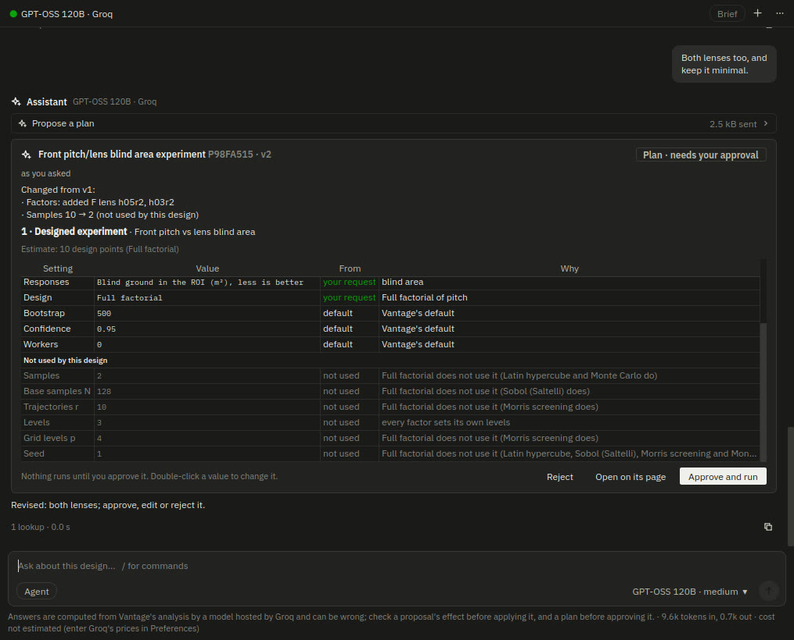
Recommended actions
Without any AI, the panel recommends what to look at next, worked out on your computer from Vantage's own results. A live strip follows what you are doing. For a selected camera it might say "QR alone sees 3.00 m²: check what its loss or a mounting error costs", and after an edit "Your last change added 0.155 m² blind ground: undo it". Recommended (n) opens the full list. Reference
Claude over MCP
Vantage is an MCP server, so Claude Code or Claude Desktop can read and change rig designs. Register it once:
claude mcp add --scope user vantage -- vantage --mcp
# Windows: … -- vantage-cli.exe --mcp
# macOS: … -- /Applications/Vantage.app/Contents/MacOS/vantage-cli --mcp
# a checkout: … -- python3 /path/to/run_vantage.py --mcpWith a Vantage window open, Claude works on the project in it, and every change shows at once as one undo step. With
no window, it works on a .vantage file and keeps a .bak of the file as it was opened. Locked
cameras, unit calibrations, stream sources, the fleet and the automation settings stay yours. Things to ask Claude Code:
- "Give me the overview of the open rig and the three things most worth fixing."
- "Try QR's pitch from 30° to 45° with simulate_changes and apply the best if it adds no blind ground."
- "Move the seams to their advised angles and tell me how much less ground the child vanishes on."
- "Run the requirements check with run_batch and summarise what fails and by how much."
- "Export the calibration for nuScenes and ROS 2 in millimetres from the front axle."
- "Duplicate the variant, add a second narrow camera ahead, and compare the front perception range."
Preferences ▸ General ▸ Claude turns the window's side of the connection off. Reference
Claude Code in the panel
Choose Claude Code · MCP at the top of the assistant panel, or press Ctrl+`. A terminal opens in the
project's folder and Claude Code starts in it, connected to this window. Scrolling, mouse, colours, copy and paste
(Ctrl+Shift+C / V) work as in a normal terminal. The Suggested menu
and the strip of recommendations hand a request straight to Claude. History continues an earlier conversation.
It runs on Linux and macOS and needs the optional pyte package.
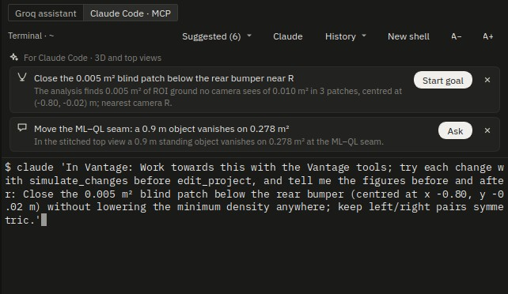
Every feature: exports, automation, CI
Export formats
Where: Export ▸ Export (Ctrl+E). There are documents (mount sheet, HTML and PDF report),
every study's JSON, the calibration formats, the surround-view tables and meshes, images, DXF and STEP. Each has an id
for --formats. Common ones are extrinsics_json, extrinsics_yaml,
opencv_yaml, ros2, ros_camera_info, nuscenes_calib,
kitti_calib, kalibr_camchain, bev_lut, bowl_mesh,
report_pdf and mount_sheet_pdf.
vantage rig.vantage --export out/ --formats nuscenes_calib,kitti_calib --frame front_axle --units mm --angles radReference · How each dataset format is written
Automation
Where: Export ▸ Automation. With it on, saving the project regenerates the chosen exports into a folder next to
it, runs the requirements check, writes vantage_summary.json and then runs your own command (for example
make perception-test). You approve the command once. It is kept in your settings, never in the project file.
vantage --watch rig.vantage --on-change "make perception-test" # the same, headless
vantage --watch rig.vantage --watch-runs 1 # regenerate once, for CICI templates
vantage rig.vantage --ci-templates . writes a GitHub Actions workflow and a GitLab CI job that run
--export and --check on the project in its repository, and keep the calibration files and the review
pack as artifacts. A pull request that moves a camera then shows its effect on the requirements.
Reference
Validation
Help ▸ Validate the models… or vantage --validate report/ checks every model against an independent
reference (closed forms, OpenCV, ITU-R tables, Monte Carlo) and writes an HTML report. --validate-quick takes about
30 s. The published report is on this site.
Reference
Reproducing a result
Every JSON Vantage writes ends with a provenance block: the version and code hash, the library versions, the
project's content hash and the study's settings. --reproduce runs it again and reports, for each number, whether it
reproduces:
vantage rig.vantage --reproduce range.json repro.json --tolerance 'blind_m2=0.005' '*_pct=0.1%'Reference · Every batch option
Recipes
Hand the calibration to a nuScenes or ROS 2 pipeline
vantage rig.vantage --export calib/ --formats nuscenes_calib,ros2,ros_camera_info --variant "Data rig · 6-cam + lidar + radars"Lens calibrations made with Lens calibration or imported with --import-calib replace the library lens
in every format.
Check the rig will work at night and in rain
vantage rig.vantage --weather weather.json
vantage rig.vantage --perception-range night.json --condition night
vantage rig.vantage --dataset night_drive/ --condition nightPrepare a design review
- Write the requirements (Add from the plan, then the programme's own).
- Keep the candidate layouts as variants and Compare them.
vantage rig.vantage --check review/ --variant 2writesreview_pack.pdfwith the verdict, one page per study and the Issues.
Bring up a new vehicle
vantage rig.vantage --install-check captures/ --report install.json --as-built rig-asbuilt.vantage
vantage rig.vantage --rig-health 60 health.json
vantage rig.vantage --as-built-check first_drive/ asbuilt/
vantage rig.vantage --fleet-import car-07 install.json --save rig.vantageFind out whether your checks catch a knocked camera
vantage rig.vantage --campaign camp/ --campaign-template fault_detectabilityThe campaign's report gives, per check, the smallest turn it detects. If none catches 0.3°, you know before a real drive is wasted.
Find the drive where a camera moved
vantage rig.vantage --online-calib drive_0412/ online/ # exit 3: a camera was knocked beyond the toleranceAsk Claude to optimise and report
In the Claude Code panel: "Without moving locked cameras, raise the minimum density above 3.5 px/cm with no new blind ground. Simulate first, apply the best as one change, and write what you did in the design log." Every change is one undo step.
Exit codes
Batch mode returns a code that a CI job can act on:
| Code | Meaning |
|---|---|
0 | Done, fine. |
1 | Failed with an error (see the output). |
2 | Done, but the plan has critical issues or the study's own failure condition is met (a cable too long, a camera inside a housing, a wheel lifted…). |
3 | A camera or sensor has to be re-mounted or could not be checked (drive log, as-built, online calibration, rig health, clock tree, CARLA comparisons). |
4 | An input could not be read, an output not written, or a calibration matched no camera. |
5 | The requirements check failed (--check). |
6 | A validation check failed, or a result does not reproduce. |
7 | No CARLA server answered, or the run failed. |
8 | The detector model is missing (--detection-download fetches it). |
9 | A campaign drive failed (run again to resume). |
10 | No approved, intact Copilot plan of that id, or a step no longer validates. |
Shortcuts to learn first
| Keys | Command | Keys | Command |
|---|---|---|---|
| Ctrl+K | Command palette | C | Place a camera on the surface |
| Ctrl+J | Assistant | G / R | Move / rotate |
| Ctrl+` | Claude Code | Ctrl+M | Mirror to the other side |
| Ctrl+Shift+B | Camera views, bird's-eye, bowl | Ctrl+L | Lock |
| Ctrl+0 | Look through the camera | F / Home | Frame selection / all |
| Ctrl+E | Export | F5 | Run the analysis now |
| Ctrl+I | Import a vehicle model | 7 / 1 / 3 | Top / front / side view |
| Ctrl+Shift+I | Installation check | Ctrl+Shift+L | Lens calibration |
? in the app lists every shortcut. The full table is in the docs.
Where to go next
- The documentation: every page, setting and option in full.
- The technical reference: each model's equations, assumptions, limits and references.
- The validation report: every model checked against an independent reference.
- The project format and the simulator bridge.
- Report a problem or ask for a feature.